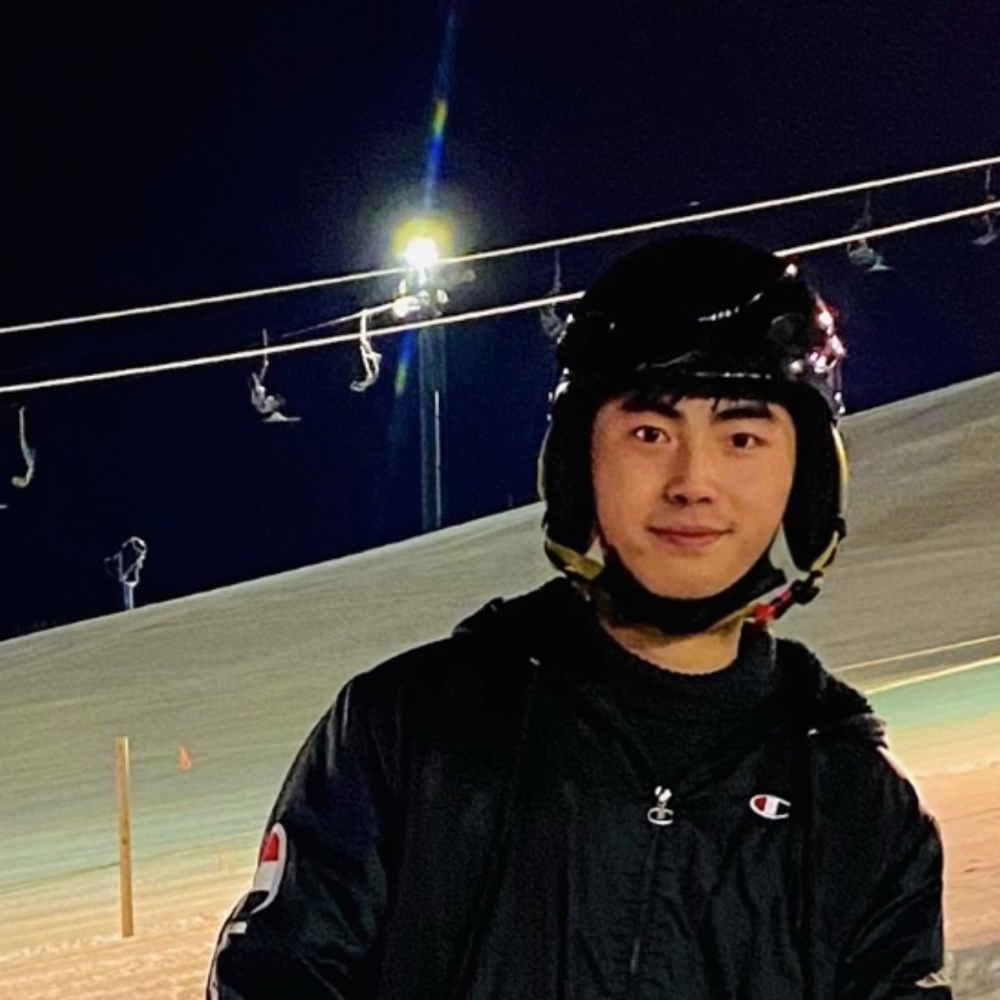
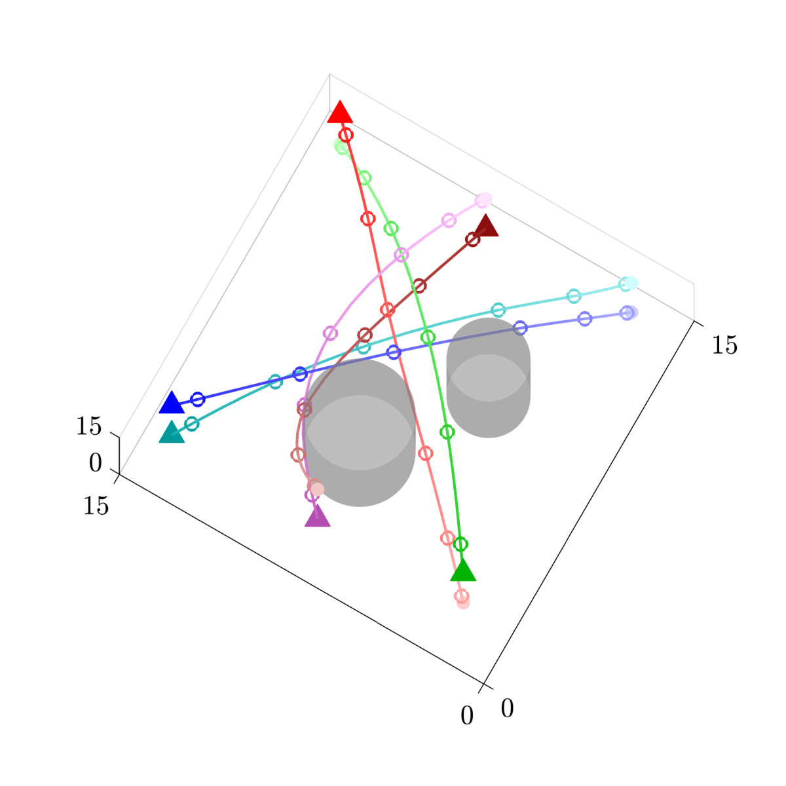
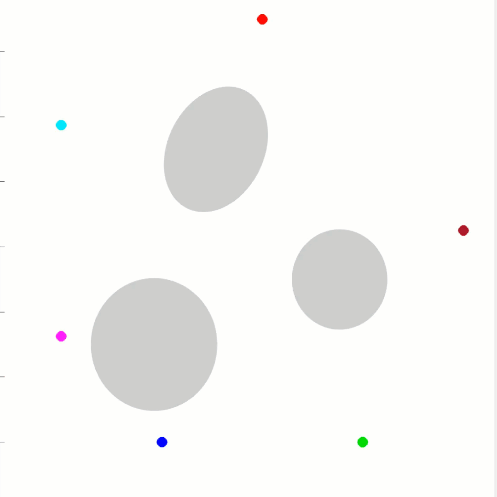
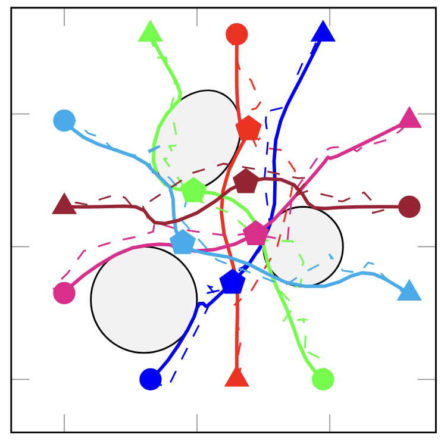

|
Minsen Yuan Hello! I am a third-year Ph.D. student in Aerospace Engineering and Mechanics at the University of Minnesota, Twin Cities, advised by Prof. Yue Yu and Prof. Ryan Caverly. I am the recipient of the John A. & Jane Dunning Copper Fellowship. Before joining UMN, I obtained my master's degree from the University of Michigan in 2023, and my bachelor's degree from Wuhan Institute of Technology in 2021. Email / CV / Google Scholar / Linkedin |
 |
{kind=link}
ResearchMy research focuses on trajectory optimization and optimal control for multi-agent autonomous systems. I develop fast, optimization-based methods that integrate nonlinear state estimation to enable robust and scalable decision-making. I am also interested in incorporating learning-based approaches. |
Trajectory Optimization for Energy-Sharing UAV-UGV with Multiple Task Locations |
|

|
Nonlinear Trajectory Optimization Models for Energy-Sharing
UAV-UGV Systems with Multiple Task Locations
Minsen Yuan, Amanuel Adane, James Humann, Yue Yu Under Review A nonlinear program (NLP) formulation for UAV-UGV trajectory optimization via smoothing of disjunctive constraints, supporting partial UAV recharge and reducing computation time by orders of magnitude over mixed-integer nonlinear (MINLP) formulations while maintaining comparable constraint satisfaction. |
Warm-Started Sequential Convex Programming (SCP) for Multi-Agent Trajectory Optimization |
|
|
 |
Sequential Convex Programming with Filtering-Based Warm-Starting
for Continuous-Time Multiagent Quadrotor Trajectory Optimization
Minsen Yuan, Yue Yu Journal of Guidance, Control, and Dynamics (JGCD), accepted, in press arXiv A sequential convex programming framework with filtering-based warm-starting for continuous-time multiagent quadrotor trajectory optimization, ensuring constraint satisfaction along the entire trajectory and reducing computation time by up to two orders of magnitude over benchmark methods. |
|
  |
Filtering-Linearization: A First-Order Method for Nonconvex Trajectory Optimization with
Filter-Based Warm-Starting
Minsen Yuan, Ryan J. Caverly, Yue Yu American Control Conference (ACC), 2025 paper / arXiv A filtering-based warm-started sequential convex programming framework for nonconvex multi-agent quadrotor trajectory optimization, achieving significantly faster convergence and improved solution quality. |
|
Website template from Jon Barron. |